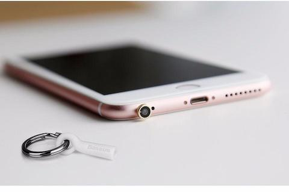
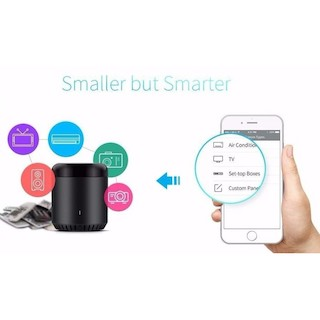
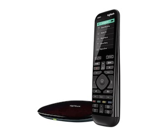
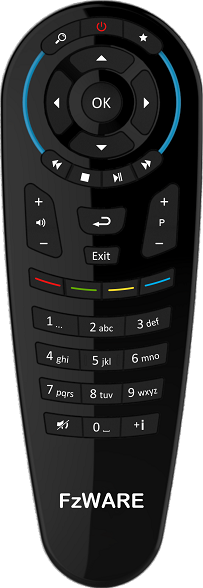

Published: Thu 31 January 2019
By Founder Fang
In My Apps .
FzRemote try to make remote control easy by combine a physical universal remote control and a iPhone App.
Have you ever want to use your iPhone as the ultimate universal remote control?

Weak IR signal, 10 meter is a joke.

Complicated setup.

Almost perfect solution except the price and complicated setup
Why real button matters
Just because your iPhone can become a remote doesn't mean it should.
Remotes are somewhat unusual devices in that they're specifically designed to be used by feel -- your thumb should be able to find buttons without you having to look at the device.
How it works
FzRemote App remote control the physical remote control via bluetooth. there are two use cases.
Nice looking remote control designed in Europe

How to get this remote
Qoo10 FzWARE Shop Only 19USD on early bird promotion.
Other Supported Hardware
CC2650RC
CC2640R2 LaunchpadDIY BLE to IR Bridge Visit ZRC github page for more info